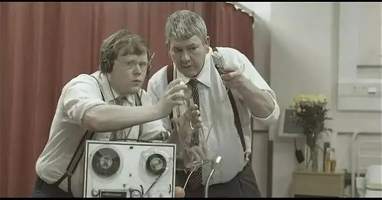
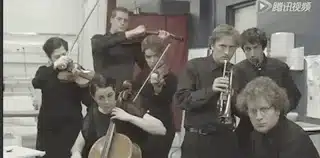
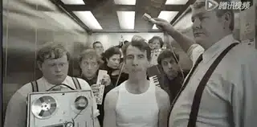
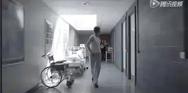
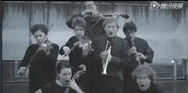
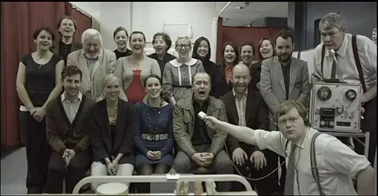

4分钟获奖脑洞短片《弗利先生》
弗利先生像是刚刚做完手术。
当头上裹得严严实实的纱布一层一层被揭开后，弗利先生被眼前的世界惊呆了。
一个乐团和一个音效二人组正围着他。
这是在闹哪样？
慢慢地，弗利先生就发现了蹊跷。
原来，乐团在根据弗利的情感变化为他即兴演奏相匹配的音乐。
而音效二人组则为弗利所生活的世界制作着相对应的逼真音效。

比如亨利将甜点甩在盘子里，音效二人组也几乎同步地制作着一摸一样的音效。
就是护士穿着高跟鞋走在地板上的声音也是音效团队制作的。

自带BGM本是一件很酷炫的事。
可是如果你所听到的一切都是别人安排和设计的，那又是一种什么样的感觉。
虽然别人制作的音效非常逼真，可那不是本源。
虽然别人可以根据你的情感创作出很合宜的配乐，可那离真实依旧很远。
当弗利意识到自己身处一个虚假、被操纵的世界时，他被吓坏了。
他拼命奔跑要摆脱这个“完美”的音效团队，可是他们穷追不舍。


终于，弗利冲上天台暂时摆脱了音效团队。
他仰天长啸释放着自己的压抑和不满，但却听不到任何声音。
原来这是一个失声的世界！
正当弗利身处无助之时，一只灵动的小鸟飞落在地面。
弗利祈求般地看着这个可爱的小鸟，他希望能够听到来自自然界真实的声音。
渐渐地，小鸟的叫声出现了，弗利高兴坏了。
可是当他环顾四周时才发现，原来是音效二人组在旁边配音。
弗利彻底绝望了。
眼前的一切太可怖了。
弗利内心翻江倒海、不知所措，这时，乐队也相应演凑起情绪悲惋的音乐。
虽然音乐很有情感冲击力，但对于弗利来说竟是那样的无情、可怕。
弗利被吓得连退几步并最终失足摔下高楼。

结束了么？
并没有！
弗利再次从医院醒来，这一次是一群哈哈大笑的看客围着他。
原来，自己的悲惨竟是别人眼里的笑料！

这部短片非常有趣。
不仅探讨了电影音效的真实性，同时也讲了一个颇具讽刺意味的黑色幽默。
故事看上去很离奇，但是如果你对照自己生活和世界好好想一下，你也许会后背发凉。
其实，弗利离你我并不远。
想一下围绕我们身边的新闻，我们获知这些信息并不是来自本源，而是来自他者的转述。
如果转述者是短片中的音效团队还好，尽管他们无情，但至少还在竭力还原真实。
可如果转述者是爱动手脚、爱带节奏的别有用心者，那就很可怕了。
鸟叫声配成狮子叫声、狮子叫声配成猪叫的声音，那这将会是一个多么混乱、多么疯狂的世界！！
回想一下此前很多反转、反转再反转的热点，你会发现，罗生门还是少数情况，大多情况是有人在恶意扭曲、掩盖、夸大某些东西。
于是，吃瓜群众像猴一样被耍的团团转。
再想象一下如果你从小所听、所学的都是被“精心设计”的东西，那你现在离正常人的标准恐怕已经是十万八千里了。
因此，追溯本源、实事求是永远是当务之急。
如果现实中，你很难去追溯本源，那你至少可以识别出哪些是骗子。
那些动不动监控录像坏了、那些喜欢砌墙把猪关在猪圈里的肯定不能相信。
要么去质疑、去了解比对各种声音，要么干脆捂住耳朵免得身中剧毒。
除了新闻，过节也是一个各种声音一起对你狂轰乱炸的时间。
很多人，就是因为节过多了，所以整个人都不好了。
八大姑家的孩子移民了、隔壁老王家的二舅拆迁了、你小学同学在上海买了一条街、没上过大学的李狗蛋开着宝马带着漂亮女孩出现在街头。
就连院子里以前那个傻里傻气的二丫头都嫁入豪门了、嫦娥也已经跳槽到火星了......
声音很多，但不一定真实。
别人眼中的成功并不一定是真的成功，我们一样需要追本溯源，我是谁，我从哪里来，我要到哪里去。
我们要在永恒中追问什么是成功，要寻问上帝什么才是自己人生的真正意义。
如果你已经被轰炸的头昏脑胀、不能自己，那大虾为你奉上过节礼物：含笑半步癫。
祝你节日快乐，痛并笑着看完人情冷暖和那躲在雾霾天后的月亮！
这里没有挑逗你眼目情欲的小鲜肉
也没有挑动你肉体情欲的段子
更没有膨胀你今生骄傲的鸡血
我们只在乎那些最质朴真诚的作品
在那里我们才能恢复真正的想象力
我们也坚信这才是我们真正需要的

ID:Six_hundred_hits
长按二维码，一键关注
【六百击】
-END-
电影评论
尽情分享朋友圈

苹果打赏通道
小提示：文末广告是腾讯配送广告，内容与本号无关，但您的每次点击（无需反复点）都会给平台带来几毛收益，欢迎您点击支持六百击。